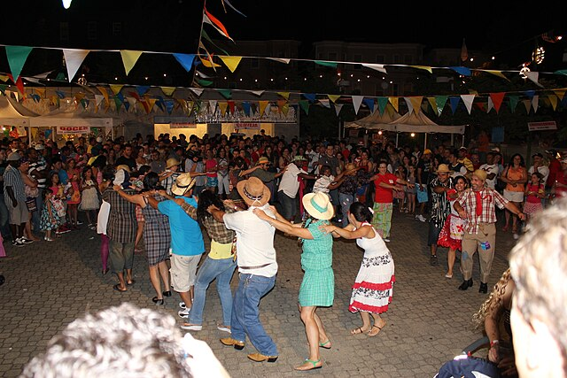

Fonte da imagem: Wikimedia Commons
A "Festa da Colheita" é uma celebração tradicional que ocorre em vários lugares do Brasil, com o objetivo de agradecer a Deus pelas bênçãos da colheita e celebrar a cultura rural. Essa festa também é um momento de alegria e confraternização, com diversas atividades culturais, musicais e gastronômicas.